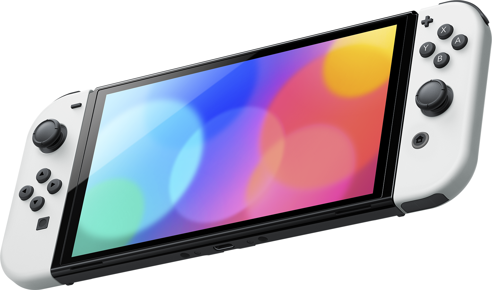

The Nintendo Switch is a Nintendo console released in America in March 2017 world wide. It is a home console/handheld console hybrid, being a handheld on its own with detachable controllers. When you dock the Switch into a monitor or TV, it becomes a home console. With the vast amount of games and easy to access anywhere, it was an immediate hit. The OLED Nintendo Switch (a more powerful version of the Switch) was released in October 2021. This new version included The OLED model features a 7-inch (180 mm) 720p OLED display, and when docked, output to 1080p resolution similar to the original model. Additionally, it features 64 GB of internal storage, enhanced audio functions, a magnesium alloy body and a wider adjustable stand for use in tabletop mode. It features similar technical specifications as the base Switch model, and is compatible with all Switch games and existing accessories.